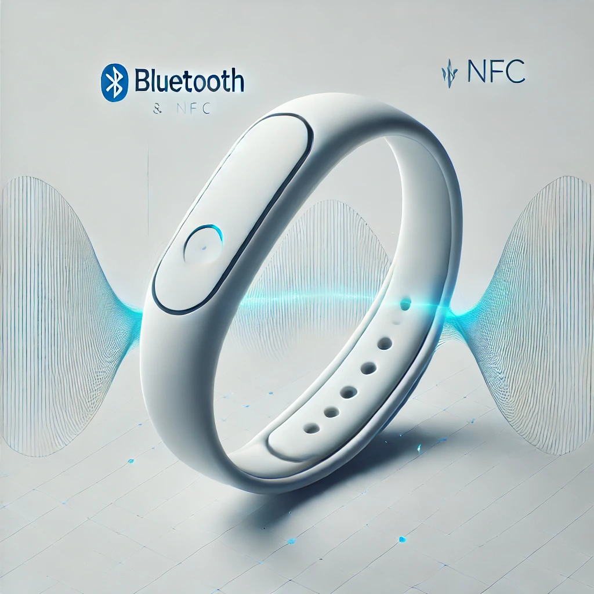

Timely exclusion support
Wearable and venue components are intended to help an agreed exclusion plan work at moments of risk.
BannedBand is developing a wearable-supported gambling-harm prevention system designed to connect exclusion, timely support and recovery tools.
Wearable and venue components are intended to help an agreed exclusion plan work at moments of risk.
The toolkit demonstrates an impulse-delay timer, savings visualiser and local data choices. Demo information stays in your browser.
Any Māori pilot should establish collective governance, decision rights and tikanga-based safeguards with Māori partners before data collection.

The safest unnecessary data is data never collected. Pilot design should document every data field, purpose, authorised user, location, retention period and deletion route.